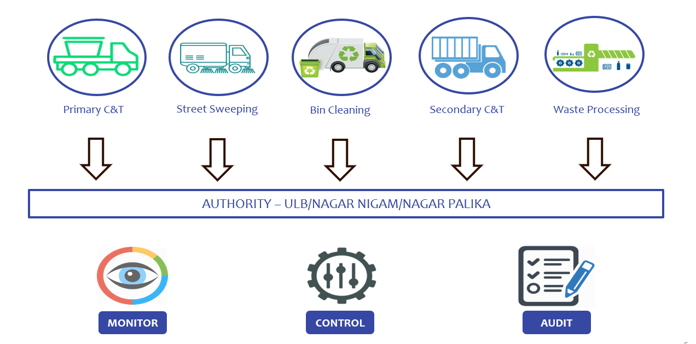
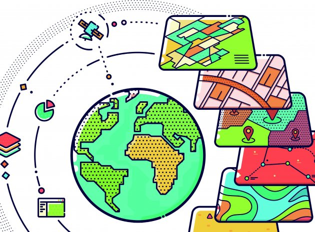
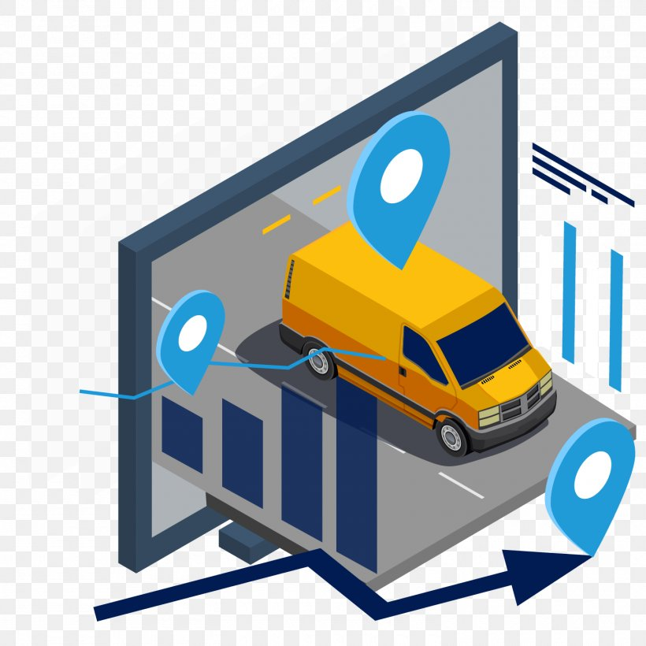

Solid Waste Management System
With the increasing emphasis on compliance with global waste disposal standards and protocols, it is essential that your business uses an efficient waste management software. Even companies that use external firms to take care of the disposal need the software for record keeping, reporting and invoicing. This way, it becomes a lot easier for the business to achieve sustainability targets as well as comply with legal standards of waste disposal.
Also, companies that deal with waste management and recycling need to use the software for the sake of remaining profitable in the current competitive and dynamic legislative systems. Use of separate manual spreadsheets and other paper-based systems is outdated and involves too much cost and effort that limits the growth opportunities of such business. Rollz Waste management software is comprehensive and covers all the areas that separate systems deal with, which makes it the perfect solution.
What is the Rollz Waste Management Software?
Rollz Waste management software helps businesses in carrying out efficiently the processes involved from the collection to disposal of waste. Such functions include ensuring that the system of waste disposal is in compliance with Occupational Safety and Health Administration regulations, scheduling dates for the collection, transportation, treatment as well as the placement of waste, management of contracts in terms of invoicing and pricing of the services, and creation of workflows for processes such as sorting and destruction.
Additionally, the software is useful for the sorting of different materials as well as the provision of different functionalities for recycling. Waste management software is also essential for the creation and management of unique waste profiles as well as the display of important notifications and alerts. This makes it easy for the business owners or responsible departments to keep up with the processes as well as take necessary action in case of breaches or any emergencies.
- Cost control: Waste management software helps in the identification and selection of the most cost-effective waste collectors, transporters, treatment administrators and disposers. It then manages the processes of invoicing and pricing as well as estimating costs for anticipated waste disposals.
- Regulatory compliance: The software tracks down and includes all the regulations and standards applicable to all wastes disposal processes carried out by the firm. It also checks the facility’s permits and generates notifications on impending expiry dates.
- Simplicity and generality: Waste management software is easy to use. It also makes easier to manage waste profiles by combining them into one system where they can all be monitored and controlled, unlike the manual systems where individual profiles are operated on separate levels.
- Waste reduction effort monitoring: The system produces detailed information and reports on both hazardous and non-hazardous waste generated during any specified time. It also helps the business to make informed decisions based on details from waste profiles and reports
- Scheduling: It also creates and manages schedules for waste collection and disposal.
Rollz Waste management Software works under three key concepts :
• Monitor • Control • Audit
KEY FEATURES OF ROLLZ ISWM SYSTEM

All geographical entities have to be mapped in google map for efficient monitoring of vehicles and MSW operations. Geo encoded data would be stored in the database with mapping with other geographical entities. Geo encode would be of Tow types i.e.
- Polygon: For closed surrounded area.
- Point: For Geo positional entities
- Polyline: For Routes and Path.
Explore our GIS Features in detail

To ensure efficient Solid Waste Management a GPS based Vehicle Tracking and Monitoring System (VTMS) has been taken up as a significant step recently.
With the available GIS mapping of all waste generators and the defined Route Maps all the waste collection vehicles shall be tracked down at control room.
Every vehicle which is collecting waste shall be fitted with GPS enabled system, routes shall be configured & placed on each GPS, and arrangement of alert generation shall also be provided in case of deviation from route. Critical alerts shall be configured when vehicle deviates from beats. Every route shall be tracked and connected to ERP, ERP shall generate MIS for each routes tracked along with its map.
The key features of the project are:
- Online real-time monitoring of garbage vehicle movement and effective enforcement through a web based Vehicle Tracking and Monitoring System (VTMS)
- Web based application for real-time route adherence of garbage vehicles using data feeds
- Installation of IP cameras at entry and exit of the landfill site
- Integrated Weighbridge Vehicle Monitoring System (IWVMS) at the entry and exit points
- Integration of VTMS with the Central Command and Control Centre
- Training to stakeholders for managing the complete VTMS eco-system
Explore our application mordernization services in detail

1) Tagging the Household/Properties of municipal corporation.
2) Tagging of operation assets and equipment ( Vehicles, Bins etc.) of Municipal corporation.
RFID reader will send the data feed to the data centre by Rest API call , Backend application will map the data to the geographical boundaries i.e. Ward . Zone etc. by spatial query based on the location data sent from mobile application and save the result to database. Tagging data will then available to visualize on the map as well as in tabular format.
Integration of RFID in waste collection process :
RFID scanned at the time of waste collection from household and bins would be synced to the database server in real time and data would be available for analysis and representation on map and reports. RDFID attached to the vehicles would be scanned at the Transfer stations ,Dumping points and weighbridge.
With RFID integration we can achieve the following information
- Area Coverage.
- Household/Properties coverage.
- Tonnage per vehicle.
- Total tonnage
- Tonnage per ward
Explore our RFID Integration Feature in detail

The filling volume sensor, here installed in a waste container lid, detects the current filling level.
Volume sensor detects the level based on ultrasonic technology. A robust ultrasonic sensor is installed in waste containers and detects the fill level, regardless of what has been deposited inside. This technology is qualified for reliability and intelligence. It automatically adapts to changing surfaces and different kinds of waste.
On a regular basis, measured data and sensor information are transmitted to the cloud via the mobile communication network. The filling level sensor is equipped with a SIM card. The advantage: existing telecommunication networks can be used for data transmission.
Realtime data feed from volume sensor will be stored in datacentre . automatic alarm would be activated whenever the volume threshold limit exceeded for any bin and sent to the related operation team assigned for the bin .
Automatic alert includes.
- SMS/EMAIL
- Push notification in mobile app for waste collector and operation team.
- Notification in web application.
Explore our application management services in detail

Mobile application for Waste collector Includes the below features.
- Activity status reporting with GIS location and photograph.
- Complain/Grievance notification and resolution reporting
Mobile Application for Citizen
Citizen mobile Application help the citizens in the following:
- Notification of door to door collection when the collector has scanned the QR/RFID code
- Citizen can notify about irregular or garbage not picked to the help desk
- Register a complain about the service and follow the status of the complain
- Take picture of the garbage point in the city and notify the ULB along with geo-location of the site for appropriate action
- Dial the toll-free number to connect to the helpdesk operator regarding any specific information
- Pay the User charges and other utility using the mobile payment options
- View the public convenience points on map.
Explore our ISWM mobile application's features in detail

Dashboard Module should give a quick and easy view to know overall status of the MSW operations at macro and micro levels. Reports module exports the data in excel format which would facilitate analysis in custom modes as per the scenario.
The system also generates consolidated operations report which would be auto-mailed to the operation, management and ULB concerned person to provide daily insight of the operations at primary, secondary and plant level.
1) Operational Reports
The operational reports are provided to the supervisors of Primary C&T, Secondary C&T and Waste Processing Plant which would assist them to increase the operational efficiency.- Staff Attendance report ward wise
- Vehicle movement report with distance and stops along service ward
- Door to door waste collection and missed report
- Missed bin cleaning report
- Vehicle idle report
- Ward-wise complain status report with turnaround time
- Vehicle wise trip report for primary and secondary operations
- VTS data not received report
- Daily vehicle wise tonnage report
- Street sweeping report with missed street report
- Waste processed summarized report
- Ward wise performance evaluation report
- Fuel Consumption report
- Vehicle mileage report
- Vehicle breakdown and maintenance report
- Primary and Secondary C&T deviation report
- Ward wise cleanliness Index report based on operations
3) ULB/SBM Reports
- Overall City level Cleanliness Index for primary and secondary
- Waste intake and processed report
- Resource utilization report based on vehicles and manpower
- Vehicle Washing Report
- Transfer station operation report
- Vehicle wise tonnage and trip report
- Door to door unserved area report
- Missed dustbin service report
- SLF disposal report
- Tipping fees report
Explore our ISWM reporting and dashboard features in detail